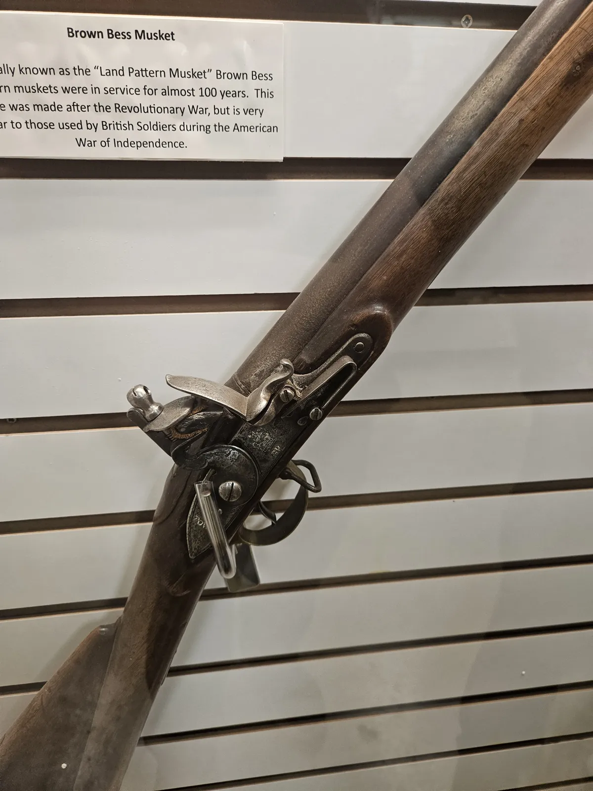

Educational research, AI engineering and immersive media
The project is housed across the College of Education, the College of Engineering, and the College of Communication and Information Sciences at The University of Alabama.
Funded byThe University of Alabama
Jewoong Moon
Educational Studies in Psychology, Research Methodology & CounselingLeads research design, the visitor study, analysis and dissemination. Directs the AdDIE Lab.
Fei Hu
Computer Science & EngineeringLeads AI and systems architecture: the retrieval pipeline, the vector index and edge computing.
Jihoon Kim
Advertising & Public RelationsDirects the VR environment design, spatial audio and artifact interaction.
Graduate research assistants support retrieval testing, telemetry quality assurance and data collection. Their names will be added here as they join.
Alabama Veterans Museum & Archives
Located in Athens, Alabama, the museum holds artifacts from U.S. conflicts from the Revolutionary War to the present, along with veteran oral histories and personal testimony. It welcomes about 12,000 visitors a year, from primary-school groups to military personnel.
AVMA is where the VR stations will be installed and where the visitor study will run. Its collections are also the source of the 3D archive.
Visit the museum's website ↗
Testing the framework beyond one museum
So the framework does not become a tool that only works for military history, an advisory cohort of structurally diverse museums, including civil-rights, science-center and community-history institutions, will review it at six summits across the project. They will contribute different archive formats and visitor groups to stress-test how well it adapts.
Cohort members will be listed here once participation is confirmed.
Institute of Museum and Library Services
Immersive Remembrance is supported by an IMLS National Leadership Grant for Museums (Applied Research), award MG-260576-OMS-26.